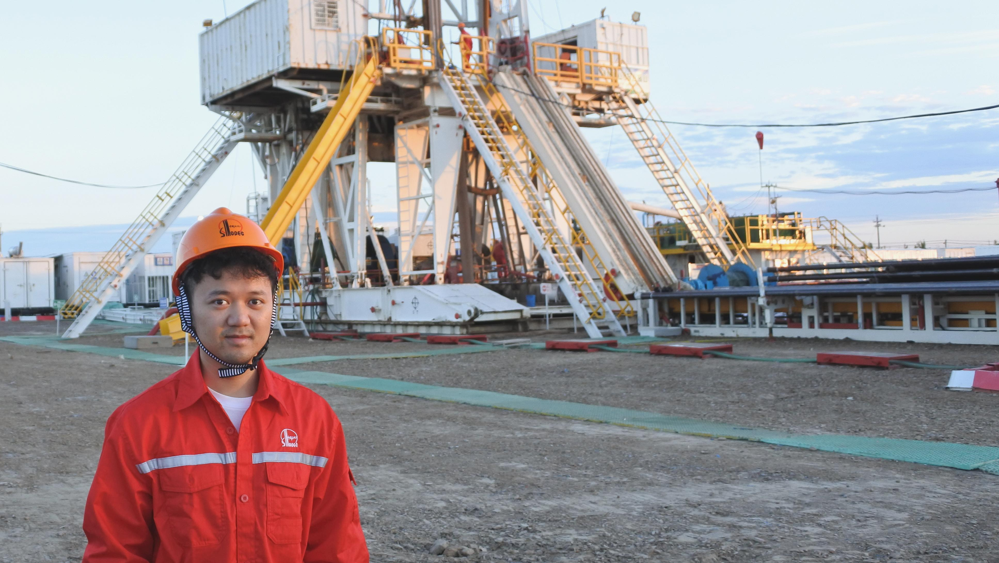
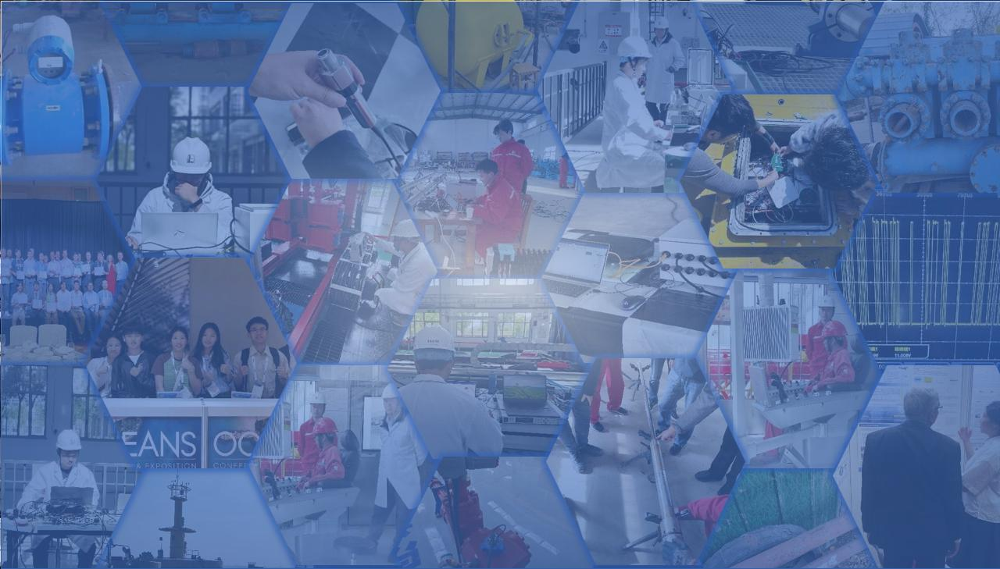

浙江大学博士研究生，研究随钻泥浆高速遥传与自适应信号处理。国家重点研发计划骨干，在噪声中还原信号。 PhD candidate at Zhejiang University. High-speed mud pulse telemetry, adaptive signal processing. Recovering signals from noise.

本科与博士均在浙江大学海洋学院。从事随钻泥浆高速信息遥传研究，参与中石化揭榜挂帅项目。擅长 MATLAB/Python 建模、自适应滤波、FPGA 嵌入式开发。100+ 天出海实验，600+ 小时攻关。 B.Eng. and PhD at Zhejiang University Ocean College. Mud pulse telemetry research, SINOPEC project. MATLAB/Python, adaptive filtering, FPGA embedded. 100+ field days, 600+ R&D hours.
三个核心项目，点击查看详情 Three core projects — click for details
噪声重构精度 >99%，信噪比提升 15dB+，极端工况零误码。
>99% reconstruction, 15dB+ SNR, zero-bit-error.
查看详情 →Details →SNR 提升 10dB+，误码率 <1e-5。舟山 5km 海试零丢帧。
10dB+ SNR, BER <1e-5. 5km sea trial.
查看详情 →Details →Linux + STM32 + OpenCV + OCR + PID 全自主控制。
Linux · STM32 · OpenCV · Autonomous.
查看详情 →Details →
点击卡片查看完整信息（权利要求、摘要、分类）Click a card for full details (claims, abstract, classification)
点击卡片可添加新闻、图片与个人记录 Click a card to add news, photos, and reflections
对音频算法、信号处理、声学工程相关岗位开放中。 Open to audio algorithm, signal processing, and acoustic engineering roles.